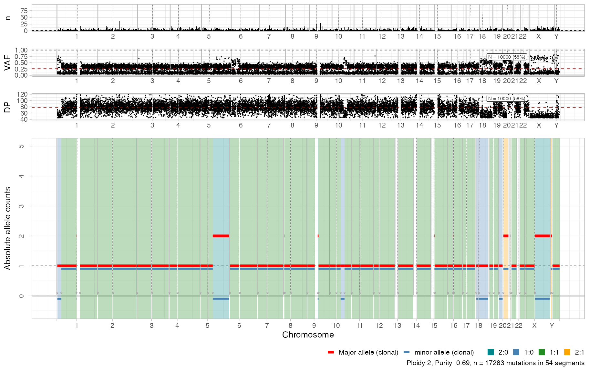
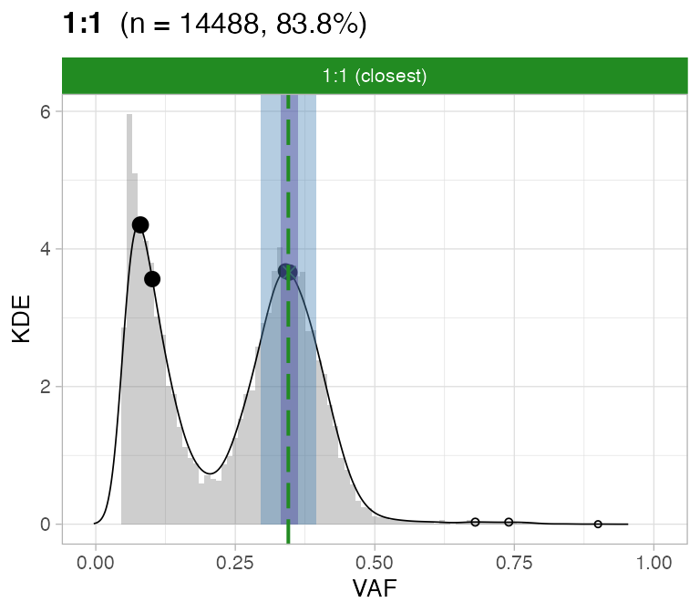
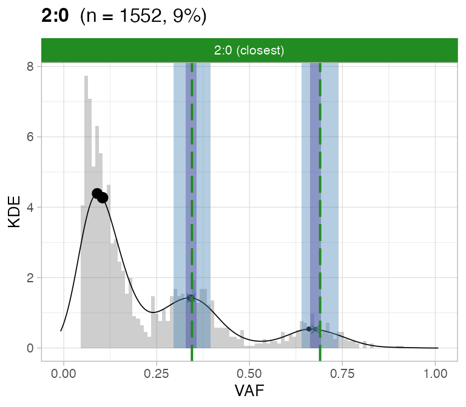
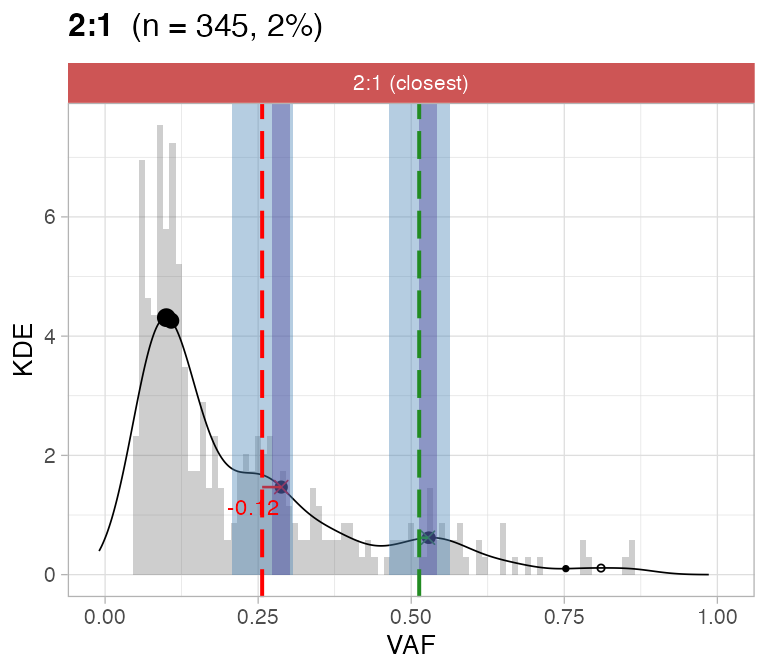
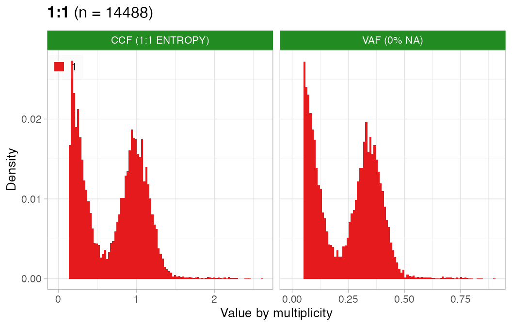
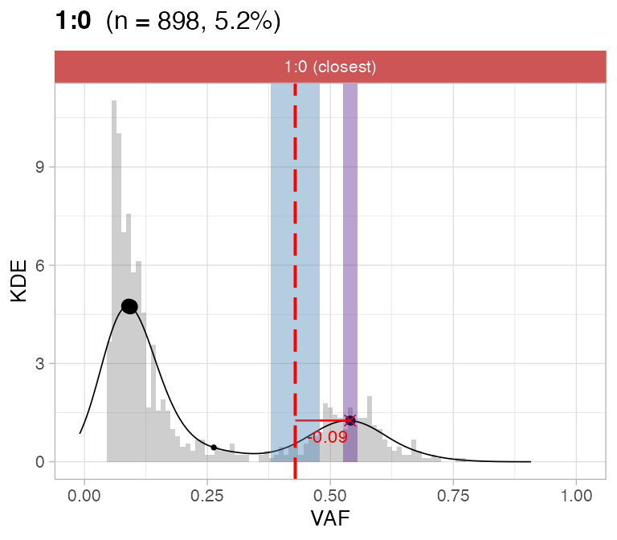
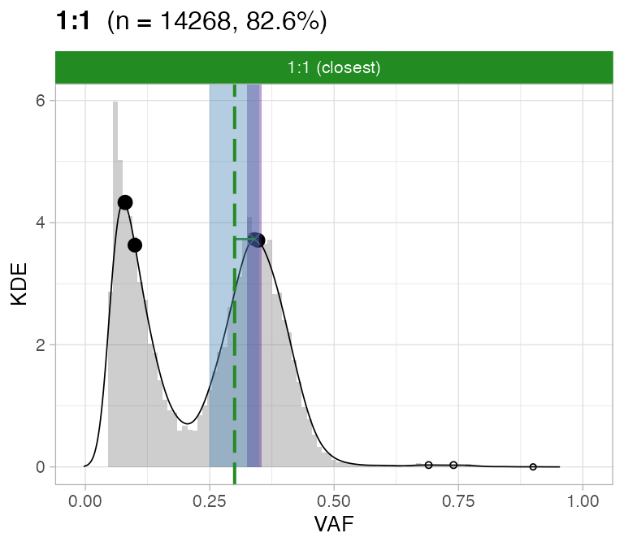

library(CNAqc)
#> Warning: replacing previous import 'cli::num_ansi_colors' by
#> 'crayon::num_ansi_colors' when loading 'BMix'
#> Warning: replacing previous import 'crayon::%+%' by 'ggplot2::%+%' when loading
#> 'BMix'
#> ✔ Loading BMix, 'Binomial and Beta-Binomial univariate mixtures'. Support : <https://caravagnalab.github.io/BMix/>
#> Warning: replacing previous import 'cli::num_ansi_colors' by
#> 'crayon::num_ansi_colors' when loading 'easypar'
#> ✔ Loading CNAqc, 'Copy Number Alteration quality check'. Support : <https://caravagn.github.io/CNAqc/>
# Extra packages
require(dplyr)
require(vcfR)
#> Loading required package: vcfR
#>
#> ***** *** vcfR *** *****
#> This is vcfR 1.12.0
#> browseVignettes('vcfR') # Documentation
#> citation('vcfR') # Citation
#> ***** ***** ***** *****We work with MSeq data discussed in the main preprint for CNAqc, replicating one analysis for patient Set06.
The data we used is hosted at the GitHub repository caravagnalab/CNAqc_datasets.
Mutation data
We download from Github a VCF file for MSeq sample Set06, and load it using the vcfR package.
VCF_url = "https://raw.githubusercontent.com/caravagnalab/CNAqc_datasets/main/MSeq_Set06/Mutations/Set.06.WGS.merged_filtered.vcf"
# Download, load and cancel data
download.file(VCF_url, "Set.06.WGS.merged_filtered.vcf",)
set6 = vcfR::read.vcfR("Set.06.WGS.merged_filtered.vcf")
#> Scanning file to determine attributes.
#> File attributes:
#> meta lines: 47
#> header_line: 48
#> variant count: 43053
#> column count: 16
#>
Meta line 47 read in.
#> All meta lines processed.
#> gt matrix initialized.
#> Character matrix gt created.
#> Character matrix gt rows: 43053
#> Character matrix gt cols: 16
#> skip: 0
#> nrows: 43053
#> row_num: 0
#>
Processed variant 1000
Processed variant 2000
Processed variant 3000
Processed variant 4000
Processed variant 5000
Processed variant 6000
Processed variant 7000
Processed variant 8000
Processed variant 9000
Processed variant 10000
Processed variant 11000
Processed variant 12000
Processed variant 13000
Processed variant 14000
Processed variant 15000
Processed variant 16000
Processed variant 17000
Processed variant 18000
Processed variant 19000
Processed variant 20000
Processed variant 21000
Processed variant 22000
Processed variant 23000
Processed variant 24000
Processed variant 25000
Processed variant 26000
Processed variant 27000
Processed variant 28000
Processed variant 29000
Processed variant 30000
Processed variant 31000
Processed variant 32000
Processed variant 33000
Processed variant 34000
Processed variant 35000
Processed variant 36000
Processed variant 37000
Processed variant 38000
Processed variant 39000
Processed variant 40000
Processed variant 41000
Processed variant 42000
Processed variant 43000
Processed variant: 43053
#> All variants processed
file.remove("Set.06.WGS.merged_filtered.vcf")
#> [1] TRUE
# VCF
print(set6)
#> ***** Object of Class vcfR *****
#> 7 samples
#> 24 CHROMs
#> 43,053 variants
#> Object size: 43.5 Mb
#> 0 percent missing data
#> ***** ***** *****We extract all the information we need, using the tidy data representation format.
# INFO fields
info_tidy = vcfR::extract_info_tidy(set6)
# Fixed fields (genomic coordinates)
fix_tidy = set6@fix %>%
as_tibble %>%
rename(
chr = CHROM,
from = POS,
ref = REF,
alt = ALT
) %>%
mutate(from = as.numeric(from), to = from + nchar(alt))
# Genotypes
geno_tidy = vcfR::extract_gt_tidy(set6) %>%
group_split(Indiv)
#> Extracting gt element GT
#> Extracting gt element GQ
#> Extracting gt element GOF
#> Extracting gt element NR
#> Extracting gt element GL
#> Extracting gt element NV
# Sample mutations in the CNAqc format
sample_mutations = lapply(geno_tidy, function(x) {
bind_cols(info_tidy, fix_tidy) %>%
full_join(x, by = "Key") %>%
mutate(DP = as.numeric(gt_NR), NV = as.numeric(gt_NV)) %>%
mutate(VAF = NV / DP) %>%
select(chr, from, to, ref, alt, NV, DP, VAF, everything()) %>%
filter(!is.na(VAF), VAF > 0)
})
# A list for all samples available
names(sample_mutations) = sapply(sample_mutations, function(x) x$Indiv[1])
sample_mutations = sample_mutations[!is.na(names(sample_mutations))]We have all the somatic mutations called for Set06.
print(sample_mutations)
#> $Set6_42
#> # A tibble: 33,245 × 46
#> chr from to ref alt NV DP VAF Key FR MMLQ TCR
#> <chr> <dbl> <dbl> <chr> <chr> <dbl> <dbl> <dbl> <int> <chr> <dbl> <int>
#> 1 chr1 30923 30924 G T 2 41 0.0488 1 0.42… 37 98
#> 2 chr1 83906 83907 A G 1 56 0.0179 2 0.28… 37 132
#> 3 chr1 83911 83930 AAGAGAG… TAGA… 2 59 0.0339 3 0.07… 37 133
#> 4 chr1 83933 83934 A G 1 59 0.0169 4 0.00… 100 141
#> 5 chr1 137123 137124 T G 5 44 0.114 5 0.14… 37 87
#> 6 chr1 797474 797475 G T 6 75 0.08 6 0.12… 37 222
#> 7 chr1 809123 809124 G A 2 92 0.0217 7 0.14… 37 235
#> 8 chr1 809135 809136 C T 2 91 0.0220 8 0.14… 37 236
#> 9 chr1 812625 812642 GCTGTGG… TCTG… 1 90 0.0111 9 0.14… 37 223
#> 10 chr1 815277 815278 T C 10 70 0.143 10 0.35… 37 196
#> # … with 33,235 more rows, and 34 more variables: HP <int>, WE <int>,
#> # Source <chr>, FS <chr>, WS <int>, PP <chr>, TR <chr>, NF <chr>, TCF <int>,
#> # NR <chr>, TC <int>, END <chr>, MGOF <chr>, SbPval <chr>, START <chr>,
#> # ReadPosRankSum <chr>, MQ <chr>, QD <dbl>, SC <chr>, BRF <dbl>,
#> # HapScore <chr>, Size <chr>, ID <chr>, QUAL <chr>, FILTER <chr>, INFO <chr>,
#> # Indiv <chr>, gt_GT <chr>, gt_GQ <chr>, gt_GOF <chr>, gt_NR <chr>,
#> # gt_GL <chr>, gt_NV <chr>, gt_GT_alleles <chr>
#>
#> $Set6_44
#> # A tibble: 32,960 × 46
#> chr from to ref alt NV DP VAF Key FR MMLQ TCR
#> <chr> <dbl> <dbl> <chr> <chr> <dbl> <dbl> <dbl> <int> <chr> <dbl> <int>
#> 1 chr1 30923 30924 G T 2 20 0.1 1 0.4275 37 98
#> 2 chr1 83906 83907 A G 3 39 0.0769 2 0.2857 37 132
#> 3 chr1 83933 83934 A G 3 46 0.0652 4 0.0000 100 141
#> 4 chr1 137123 137124 T G 1 29 0.0345 5 0.1438 37 87
#> 5 chr1 797474 797475 G T 5 78 0.0641 6 0.1291 37 222
#> 6 chr1 809123 809124 G A 3 67 0.0448 7 0.1429 37 235
#> 7 chr1 809135 809136 C T 2 66 0.0303 8 0.1429 37 236
#> 8 chr1 815277 815278 T C 4 70 0.0571 10 0.3569 37 196
#> 9 chr1 815316 815319 GTT ATC 3 80 0.0375 11 0.1403 37 191
#> 10 chr1 819221 819225 GTTA ATTC 2 55 0.0364 12 0.0715 23 198
#> # … with 32,950 more rows, and 34 more variables: HP <int>, WE <int>,
#> # Source <chr>, FS <chr>, WS <int>, PP <chr>, TR <chr>, NF <chr>, TCF <int>,
#> # NR <chr>, TC <int>, END <chr>, MGOF <chr>, SbPval <chr>, START <chr>,
#> # ReadPosRankSum <chr>, MQ <chr>, QD <dbl>, SC <chr>, BRF <dbl>,
#> # HapScore <chr>, Size <chr>, ID <chr>, QUAL <chr>, FILTER <chr>, INFO <chr>,
#> # Indiv <chr>, gt_GT <chr>, gt_GQ <chr>, gt_GOF <chr>, gt_NR <chr>,
#> # gt_GL <chr>, gt_NV <chr>, gt_GT_alleles <chr>
#>
#> $Set6_45
#> # A tibble: 32,782 × 46
#> chr from to ref alt NV DP VAF Key FR MMLQ TCR
#> <chr> <dbl> <dbl> <chr> <chr> <dbl> <dbl> <dbl> <int> <chr> <dbl> <int>
#> 1 chr1 30923 30924 G T 2 42 0.0476 1 0.42… 37 98
#> 2 chr1 83906 83907 A G 3 57 0.0526 2 0.28… 37 132
#> 3 chr1 83911 83930 AAGAGAG… TAGA… 5 57 0.0877 3 0.07… 37 133
#> 4 chr1 83933 83934 A G 3 59 0.0508 4 0.00… 100 141
#> 5 chr1 137123 137124 T G 3 34 0.0882 5 0.14… 37 87
#> 6 chr1 797474 797475 G T 3 64 0.0469 6 0.12… 37 222
#> 7 chr1 809123 809124 G A 3 71 0.0423 7 0.14… 37 235
#> 8 chr1 809135 809136 C T 3 75 0.04 8 0.14… 37 236
#> 9 chr1 815277 815278 T C 9 81 0.111 10 0.35… 37 196
#> 10 chr1 815316 815319 GTT ATC 3 89 0.0337 11 0.14… 37 191
#> # … with 32,772 more rows, and 34 more variables: HP <int>, WE <int>,
#> # Source <chr>, FS <chr>, WS <int>, PP <chr>, TR <chr>, NF <chr>, TCF <int>,
#> # NR <chr>, TC <int>, END <chr>, MGOF <chr>, SbPval <chr>, START <chr>,
#> # ReadPosRankSum <chr>, MQ <chr>, QD <dbl>, SC <chr>, BRF <dbl>,
#> # HapScore <chr>, Size <chr>, ID <chr>, QUAL <chr>, FILTER <chr>, INFO <chr>,
#> # Indiv <chr>, gt_GT <chr>, gt_GQ <chr>, gt_GOF <chr>, gt_NR <chr>,
#> # gt_GL <chr>, gt_NV <chr>, gt_GT_alleles <chr>
#>
#> $Set6_46
#> # A tibble: 33,907 × 46
#> chr from to ref alt NV DP VAF Key FR MMLQ TCR
#> <chr> <dbl> <dbl> <chr> <chr> <dbl> <dbl> <dbl> <int> <chr> <dbl> <int>
#> 1 chr1 30923 30924 G T 2 22 0.0909 1 0.42… 37 98
#> 2 chr1 83906 83907 A G 3 35 0.0857 2 0.28… 37 132
#> 3 chr1 83933 83934 A G 6 38 0.158 4 0.00… 100 141
#> 4 chr1 137123 137124 T G 1 30 0.0333 5 0.14… 37 87
#> 5 chr1 797474 797475 G T 4 65 0.0615 6 0.12… 37 222
#> 6 chr1 809123 809124 G A 6 96 0.0625 7 0.14… 37 235
#> 7 chr1 809135 809136 C T 5 94 0.0532 8 0.14… 37 236
#> 8 chr1 812625 812642 GCTGTGG… TCTG… 3 87 0.0345 9 0.14… 37 223
#> 9 chr1 815277 815278 T C 10 69 0.145 10 0.35… 37 196
#> 10 chr1 815316 815319 GTT ATC 3 85 0.0353 11 0.14… 37 191
#> # … with 33,897 more rows, and 34 more variables: HP <int>, WE <int>,
#> # Source <chr>, FS <chr>, WS <int>, PP <chr>, TR <chr>, NF <chr>, TCF <int>,
#> # NR <chr>, TC <int>, END <chr>, MGOF <chr>, SbPval <chr>, START <chr>,
#> # ReadPosRankSum <chr>, MQ <chr>, QD <dbl>, SC <chr>, BRF <dbl>,
#> # HapScore <chr>, Size <chr>, ID <chr>, QUAL <chr>, FILTER <chr>, INFO <chr>,
#> # Indiv <chr>, gt_GT <chr>, gt_GQ <chr>, gt_GOF <chr>, gt_NR <chr>,
#> # gt_GL <chr>, gt_NV <chr>, gt_GT_alleles <chr>
#>
#> $Set6_47
#> # A tibble: 32,814 × 46
#> chr from to ref alt NV DP VAF Key FR MMLQ TCR
#> <chr> <dbl> <dbl> <chr> <chr> <dbl> <dbl> <dbl> <int> <chr> <dbl> <int>
#> 1 chr1 30923 30924 G T 3 12 0.25 1 0.42… 37 98
#> 2 chr1 83906 83907 A G 6 41 0.146 2 0.28… 37 132
#> 3 chr1 83933 83934 A G 7 39 0.179 4 0.00… 100 141
#> 4 chr1 137123 137124 T G 7 38 0.184 5 0.14… 37 87
#> 5 chr1 797474 797475 G T 4 68 0.0588 6 0.12… 37 222
#> 6 chr1 809123 809124 G A 4 84 0.0476 7 0.14… 37 235
#> 7 chr1 809135 809136 C T 2 84 0.0238 8 0.14… 37 236
#> 8 chr1 812625 812642 GCTGTGG… TCTG… 4 71 0.0563 9 0.14… 37 223
#> 9 chr1 815277 815278 T C 6 67 0.0896 10 0.35… 37 196
#> 10 chr1 815316 815319 GTT ATC 2 68 0.0294 11 0.14… 37 191
#> # … with 32,804 more rows, and 34 more variables: HP <int>, WE <int>,
#> # Source <chr>, FS <chr>, WS <int>, PP <chr>, TR <chr>, NF <chr>, TCF <int>,
#> # NR <chr>, TC <int>, END <chr>, MGOF <chr>, SbPval <chr>, START <chr>,
#> # ReadPosRankSum <chr>, MQ <chr>, QD <dbl>, SC <chr>, BRF <dbl>,
#> # HapScore <chr>, Size <chr>, ID <chr>, QUAL <chr>, FILTER <chr>, INFO <chr>,
#> # Indiv <chr>, gt_GT <chr>, gt_GQ <chr>, gt_GOF <chr>, gt_NR <chr>,
#> # gt_GL <chr>, gt_NV <chr>, gt_GT_alleles <chr>
#>
#> $Set6_48
#> # A tibble: 32,859 × 46
#> chr from to ref alt NV DP VAF Key FR MMLQ TCR
#> <chr> <dbl> <dbl> <chr> <chr> <dbl> <dbl> <dbl> <int> <chr> <dbl> <int>
#> 1 chr1 30923 30924 G T 3 14 0.214 1 0.42… 37 98
#> 2 chr1 83906 83907 A G 2 28 0.0714 2 0.28… 37 132
#> 3 chr1 83933 83934 A G 3 36 0.0833 4 0.00… 100 141
#> 4 chr1 137123 137124 T G 2 36 0.0556 5 0.14… 37 87
#> 5 chr1 797474 797475 G T 6 69 0.0870 6 0.12… 37 222
#> 6 chr1 809123 809124 G A 5 76 0.0658 7 0.14… 37 235
#> 7 chr1 809135 809136 C T 5 78 0.0641 8 0.14… 37 236
#> 8 chr1 812625 812642 GCTGTGG… TCTG… 1 62 0.0161 9 0.14… 37 223
#> 9 chr1 815277 815278 T C 6 58 0.103 10 0.35… 37 196
#> 10 chr1 815316 815319 GTT ATC 4 71 0.0563 11 0.14… 37 191
#> # … with 32,849 more rows, and 34 more variables: HP <int>, WE <int>,
#> # Source <chr>, FS <chr>, WS <int>, PP <chr>, TR <chr>, NF <chr>, TCF <int>,
#> # NR <chr>, TC <int>, END <chr>, MGOF <chr>, SbPval <chr>, START <chr>,
#> # ReadPosRankSum <chr>, MQ <chr>, QD <dbl>, SC <chr>, BRF <dbl>,
#> # HapScore <chr>, Size <chr>, ID <chr>, QUAL <chr>, FILTER <chr>, INFO <chr>,
#> # Indiv <chr>, gt_GT <chr>, gt_GQ <chr>, gt_GOF <chr>, gt_NR <chr>,
#> # gt_GL <chr>, gt_NV <chr>, gt_GT_alleles <chr>Copy Number data
Sequenza calls are available in the same repository.
We use an extra function to load a solution (so we can easily compare multiple runs etc etc.).
# Load Sequenza output
load_SQ_output = function(URL, sample, run)
{
# We can directly read them from remote URLs
segments_file = paste0(URL, run, '/', sample, '.smoothedSegs.txt')
purity_file = paste0(URL, run, '/', sample, '_confints_CP.txt')
# Get segments
segments = readr::read_tsv(segments_file, col_types = readr::cols()) %>%
dplyr::rename(
chr = chromosome,
from = start.pos,
to = end.pos,
Major = A,
minor = B
) %>%
dplyr::select(chr, from, to, Major, minor, dplyr::everything())
# Get purity and ploidy
solutions = readr::read_tsv(purity_file, col_types = readr::cols())
purity = solutions$cellularity[2]
ploidy = solutions$ploidy.estimate[2]
return(
list(
segments = segments,
purity = purity,
ploidy = ploidy
)
)
}We can load the calls for 2 solutions of sample Set6_42; we begin with our final, good solution.
Sequenza_URL = "https://raw.githubusercontent.com/caravagnalab/CNAqc_datasets/main/MSeq_Set06/Copy%20Number/"
# Final sequenza run (good calls)
Sequenza_good_calls = load_SQ_output(Sequenza_URL, sample = 'Set6_42', run = 'final')
print(Sequenza_good_calls)
#> $segments
#> # A tibble: 54 × 7
#> chr from to Major minor CNt size
#> <chr> <dbl> <dbl> <dbl> <dbl> <dbl> <dbl>
#> 1 chr1 2847119 27674851 1 0 1 24827732
#> 2 chr1 27681534 120332727 1 1 2 92651193
#> 3 chr1 120333201 121485435 2 0 2 1152234
#> 4 chr1 142535470 246750621 1 1 2 104215151
#> 5 chr2 2500000 90500000 1 1 2 88000000
#> 6 chr2 96800000 240699373 1 1 2 143899373
#> 7 chr3 2500000 87900000 1 1 2 85400000
#> 8 chr3 93900000 195522430 1 1 2 101622430
#> 9 chr4 2500000 48200000 1 1 2 45700000
#> 10 chr4 52700000 188654276 1 1 2 135954276
#> # … with 44 more rows
#>
#> $purity
#> [1] 0.69
#>
#> $ploidy
#> [1] 2Calls analysis
For this example we work with mutations found in sample Set6_42.
# Single-nucleotide variants with VAF >5%
snvs = sample_mutations[['Set6_42']] %>%
filter(ref %in% c('A', 'C', "T", 'G'), alt %in% c('A', 'C', "T", 'G')) %>%
filter(VAF > 0.05)
# CNA segments and purity
cna = Sequenza_good_calls$segments
purity = Sequenza_good_calls$purityFull CNAqc analysis. First we create the object.
# CNAqc data object
x = CNAqc::init(snvs,
cna,
purity,
ref = "GRCh38")
#> [ CNAqc - CNA Quality Check ]
#>
#> ℹ Using reference genome coordinates for: GRCh38.
#> ✔ Fortified calls for 18858 somatic mutations: 18858 SNVs (100%) and 0 indels.
#> ! CNAs have no CCF, assuming clonal CNAs (CCF = 1).
#> ! Added segments length (in basepairs) to CNA segments.
#> ✔ Fortified CNAs for 54 segments: 54 clonal and 0 subclonal.
#> ✔ 17283 mutations mapped to clonal CNAs.
print(x)
#> ── [ CNAqc ] 17283 mutations in 54 segments (54 clonal, 0 subclonal). Genome re
#>
#> ── Clonal CNAs
#>
#> 1:1 [n = 14488, L = 2398 Mb] ■■■■■■■■■■■■■■■■■■■■■■■■■■■
#> 2:0 [n = 1552, L = 200 Mb] ■■■
#> 1:0 [n = 898, L = 141 Mb] ■■
#> 2:1 [n = 345, L = 43 Mb] ■
#> ℹ Sample Purity: 69% ~ Ploidy: 2.Data
Show the CNA data for this sample.
cowplot::plot_grid(
plot_gw_counts(x),
plot_gw_vaf(x, N = 10000),
plot_gw_depth(x, N = 10000),
plot_segments(x, highlight = c("1:0", "1:1", "2:0", "2:1", '2:2')),
align = 'v',
nrow = 4,
rel_heights = c(.15, .15, .15, .8))
Show the mutation data for this sample.
ggpubr::ggarrange(
plot_data_histogram(x, which = 'VAF'),
plot_data_histogram(x, which = 'DP'),
plot_data_histogram(x, which = 'NV'),
ncol = 3,
nrow = 1
)
#> Warning: Removed 8 rows containing missing values (geom_bar).Peak detection
Perform peak detection and show its results.
# Peaks
x = CNAqc::analyze_peaks(x, matching_strategy = 'closest')
#>
#> ── Peak analysis: simple CNAs ──────────────────────────────────────────────────
#> ℹ Analysing 17283 mutations mapping to karyotype(s) 1:1, 2:0, 1:0, and 2:1.
#> ℹ Mixed type peak detection for karyotype 1:0 (898 mutations)
#> ℹ Mixed type peak detection for karyotype 1:1 (14488 mutations)
#> ℹ Mixed type peak detection for karyotype 2:0 (1552 mutations)
#> ℹ Mixed type peak detection for karyotype 2:1 (345 mutations)
#> # A tibble: 6 × 16
#> # Rowwise:
#> mutation_multiplicity karyotype peak delta_vaf x y counts_per_bin
#> <dbl> <chr> <dbl> <dbl> <dbl> <dbl> <int>
#> 1 1 1:1 0.345 0.025 0.345 3.67 500
#> 2 1 2:0 0.345 0.025 0.34 1.43 19
#> 3 2 2:0 0.69 0.05 0.673 0.537 12
#> 4 1 1:0 0.527 0.0583 0.54 1.26 13
#> 5 1 2:1 0.257 0.0138 0.263 1.65 7
#> 6 2 2:1 0.513 0.0276 0.503 0.581 1
#> # … with 9 more variables: discarded <lgl>, from <chr>, offset_VAF <dbl>,
#> # offset <dbl>, weight <dbl>, epsilon <dbl>, VAF_tolerance <dbl>,
#> # matched <lgl>, QC <chr>
#> ✔ Peak detection PASS with r = 0.00179950589089446 - maximum purity error ε = 0.05.
#>
#> ── Peak analysis: complex CNAs ─────────────────────────────────────────────────
#> ℹ No karyotypes with >100 mutation(s).
#>
#> ── Peak analysis: subclonal CNAs ───────────────────────────────────────────────
#> ℹ No subclonal CNAs in this sample.
print(x)
#> ── [ CNAqc ] 17283 mutations in 54 segments (54 clonal, 0 subclonal). Genome re
#>
#> ── Clonal CNAs
#>
#> 1:1 [n = 14488, L = 2398 Mb] ■■■■■■■■■■■■■■■■■■■■■■■■■■■
#> 2:0 [n = 1552, L = 200 Mb] ■■■
#> 1:0 [n = 898, L = 141 Mb] ■■
#> 2:1 [n = 345, L = 43 Mb] ■
#> ℹ Sample Purity: 69% ~ Ploidy: 2.
#>
#> ── PASS Peaks QC closest: 111%, λ = 0.0018. Purity correction: 0%. ───────────
#> ℹ 1:1 ~ n = 14488 ( 84%) → PASS 0
#> ℹ 2:0 ~ n = 1552 ( 9%) → PASS 0.01 PASS 0.017
#> ℹ 1:0 ~ n = 898 ( 5%) → PASS -0.011
#> ℹ 2:1 ~ n = 345 ( 2%) → PASS -0.024 PASS 0.019For this sample these calls are passed by CNAqc.
# Do not assemble plots, and remove karyotypes with no data associated
plot_peaks_analysis(x, empty_plot = FALSE, assembly_plot = FALSE)
#> [[1]]
#>
#> [[2]]
#>
#> [[3]]
#>
#> [[4]]
CCF
Perform CCF computation detection with the ENTROPY method.
# CCF
x = CNAqc::compute_CCF(x, method = 'ENTROPY')
#> ── Computing mutation multiplicity for single-copy karyotype 1:0 ───────────────
#> ── Computing mutation multiplicity for single-copy karyotype 1:1 ───────────────
#> ── Computing mutation multiplicity for karyotype 2:0 using the entropy method. ─
#> ℹ Expected Binomial peak(s) for these calls (1 and 2 copies): 0.345 and 0.69
#> ℹ Mixing pre/ post aneuploidy: 0.74 and 0.26
#> ℹ Not assignamble area: [0.452830188679245; 0.622641509433962]
#> ── Computing mutation multiplicity for karyotype 2:1 using the entropy method. ─
#> ℹ Expected Binomial peak(s) for these calls (1 and 2 copies): 0.256505576208178 and 0.513011152416357
#> ℹ Mixing pre/ post aneuploidy: 0.7 and 0.3
#> ℹ Not assignamble area: [0.336842105263158; 0.442105263157895]
print(x)
#> ── [ CNAqc ] 17283 mutations in 54 segments (54 clonal, 0 subclonal). Genome re
#>
#> ── Clonal CNAs
#>
#> 1:1 [n = 14488, L = 2398 Mb] ■■■■■■■■■■■■■■■■■■■■■■■■■■■
#> 2:0 [n = 1552, L = 200 Mb] ■■■
#> 1:0 [n = 898, L = 141 Mb] ■■
#> 2:1 [n = 345, L = 43 Mb] ■
#> ℹ Sample Purity: 69% ~ Ploidy: 2.
#>
#> ── PASS Peaks QC closest: 111%, λ = 0.0018. Purity correction: 0%. ───────────
#> ℹ 1:1 ~ n = 14488 ( 84%) → PASS 0
#> ℹ 2:0 ~ n = 1552 ( 9%) → PASS 0.01 PASS 0.017
#> ℹ 1:0 ~ n = 898 ( 5%) → PASS -0.011
#> ℹ 2:1 ~ n = 345 ( 2%) → PASS -0.024 PASS 0.019
#> ✔ Cancer Cell Fraction (CCF) data available for karyotypes:1:0, 1:1, 2:0, and 2:1.
#> ✔ PASS CCF via ENTROPY.
#> ✔ PASS CCF via ENTROPY.
#> ✔ PASS CCF via ENTROPY.
#> ✔ PASS CCF via ENTROPY.CCF can be estimated well for this sample.
# Do not assemble plots, and remove karyotypes with no data associated
plot_CCF(x, assembly_plot = FALSE, empty_plot = FALSE)
#> [[1]]
#>
#> [[2]]
#>
#> [[3]]
#>
#> [[4]]
Other analyses
Smooth segments with gaps up to 10 megabases (does not affect segments in this sample).
x = CNAqc::smooth_segments(x)
#> → chr1 4 -4 @
#> → chr2 2 -2 @
#> → chr3 2 -2 @
#> → chr4 2 -2 @
#> → chr5 3 -3 @
#> → chr6 2 -2 @
#> → chr7 2 -2 @
#> → chr8 4 -4 @
#> → chr9 3 -3 @
#> → chr10 4 -4 @
#> → chr11 2 -2 @
#> → chr12 2 -2 @
#> → chr15 2 -2 @
#> → chr16 3 -3 @
#> → chr17 2 -2 @
#> → chr18 2 -2 @
#> → chr19 2 -2 @
#> → chr20 2 -2 @
#> → chr21 2 -2 @
#> → chrX 2 -2 @
#> → chrY 2 -2 @
#> ✔ Smoothed from 54 to 54 segments with 1e+06 gap (bases).
#> ℹ Creating a new CNAqc object. The old object will be retained in the $before_smoothing field.
#> [ CNAqc - CNA Quality Check ]
#>
#> ℹ Using reference genome coordinates for: GRCh38.
#> ✔ Fortified calls for 17283 somatic mutations: 17283 SNVs (100%) and 0 indels.
#> ✔ Fortified CNAs for 54 segments: 54 clonal and 0 subclonal.
#> Warning in map_mutations_to_clonal_segments(snvs, cna_clonal): [CNAqc] a
#> karyotype column is present in CNA calls, and will be overwritten
#> ✔ 17283 mutations mapped to clonal CNAs.
print(x)
#> ── [ CNAqc ] 17283 mutations in 54 segments (54 clonal, 0 subclonal). Genome re
#>
#> ── Clonal CNAs
#>
#> 1:1 [n = 14488, L = 2398 Mb] ■■■■■■■■■■■■■■■■■■■■■■■■■■■
#> 2:0 [n = 1552, L = 200 Mb] ■■■
#> 1:0 [n = 898, L = 141 Mb] ■■
#> 2:1 [n = 345, L = 43 Mb] ■
#> ℹ Sample Purity: 69% ~ Ploidy: 2.
#> ✔ These segments are smoothed; before smoothing there were 54 segments.Perform fragmentation analysis (no excess of short segments in this sample).
x = CNAqc::detect_arm_overfragmentation(x)
#> ℹ One-tailed Binomial test: 0 tests, alpha 0.01. Short segments: 0.2% of the reference arm.
#> ℹ 0 significantly overfragmented chromosome arms (alpha level 0.01).
print(x)
#> ── [ CNAqc ] 17283 mutations in 54 segments (54 clonal, 0 subclonal). Genome re
#>
#> ── Clonal CNAs
#>
#> 1:1 [n = 14488, L = 2398 Mb] ■■■■■■■■■■■■■■■■■■■■■■■■■■■
#> 2:0 [n = 1552, L = 200 Mb] ■■■
#> 1:0 [n = 898, L = 141 Mb] ■■
#> 2:1 [n = 345, L = 43 Mb] ■
#> ℹ Sample Purity: 69% ~ Ploidy: 2.
#> ✔ These segments are smoothed; before smoothing there were 54 segments.
#> ✔ Arm-level fragmentation analysis: 0 segments overfragmented.Alternative solutions
We show how to discover that a tetraploid solution is not correct.
# Tetraploid solution sequenza (bad calls)
Sequenza_bad_calls = load_SQ_output(Sequenza_URL, sample = 'Set6_42', run = 'tetra')
# CNA segments and purity
cna = Sequenza_bad_calls$segments
purity = Sequenza_bad_calls$purity
print(Sequenza_bad_calls$ploidy) # Tetraploid
#> [1] 3.9Let’s see why this is wrong, using peak detection.
# CNAqc data object
x = CNAqc::init(snvs, cna, purity, ref = "GRCh38") %>%
CNAqc::analyze_peaks(matching_strategy = 'closest')
#> [ CNAqc - CNA Quality Check ]
#>
#> ℹ Using reference genome coordinates for: GRCh38.
#> ✔ Fortified calls for 18858 somatic mutations: 18858 SNVs (100%) and 0 indels.
#> ! CNAs have no CCF, assuming clonal CNAs (CCF = 1).
#> ! Added segments length (in basepairs) to CNA segments.
#> ✔ Fortified CNAs for 56 segments: 56 clonal and 0 subclonal.
#> ✔ 17283 mutations mapped to clonal CNAs.
#>
#> ── Peak analysis: simple CNAs ──────────────────────────────────────────────────
#> ℹ Analysing 15166 mutations mapping to karyotype(s) 2:2 and 2:0.
#> ℹ Mixed type peak detection for karyotype 2:0 (898 mutations)
#> ℹ Mixed type peak detection for karyotype 2:2 (14268 mutations)
#> # A tibble: 4 × 16
#> # Rowwise:
#> mutation_multiplicity karyotype peak delta_vaf x y counts_per_bin
#> <dbl> <chr> <dbl> <dbl> <dbl> <dbl> <int>
#> 1 1 2:2 0.177 0.0104 0.0976 3.72 594
#> 2 2 2:2 0.355 0.0208 0.345 3.72 499
#> 3 1 2:0 0.275 0.025 0.240 0.591 4
#> 4 2 2:0 0.55 0.05 0.54 1.26 13
#> # … with 9 more variables: discarded <lgl>, from <chr>, offset_VAF <dbl>,
#> # offset <dbl>, weight <dbl>, epsilon <dbl>, VAF_tolerance <dbl>,
#> # matched <lgl>, QC <chr>
#> ✖ Peak detection FAIL with r = 0.258199182403632 - maximum purity error ε = 0.05.
#>
#> ── Peak analysis: complex CNAs ─────────────────────────────────────────────────
#> ℹ Karyotypes 3:1, 4:0, and 4:2 with >100 mutation(s). Using epsilon = 0.05.
#> # A tibble: 3 × 5
#> # Groups: karyotype, matched [3]
#> karyotype n mismatched matched prop
#> <chr> <table> <int> <dbl> <dbl>
#> 1 4:2 169 1 3 0.75
#> 2 4:0 617 2 2 0.5
#> 3 3:1 1331 3 0 0
#>
#> ── Peak analysis: subclonal CNAs ───────────────────────────────────────────────
#> ℹ No subclonal CNAs in this sample.
print(x)
#> ── [ CNAqc ] 17283 mutations in 56 segments (56 clonal, 0 subclonal). Genome re
#>
#> ── Clonal CNAs
#>
#> 2:2 [n = 14268, L = 2321 Mb] ■■■■■■■■■■■■■■■■■■■■■■■■■■■
#> 3:1 [n = 1331, L = 188 Mb] ■■
#> 2:0 [n = 898, L = 141 Mb] ■■
#> 4:0 [n = 617, L = 101 Mb] ■
#> 4:2 [n = 169, L = 31 Mb]
#> ℹ Sample Purity: 55% ~ Ploidy: 4.
#>
#> ── FAIL Peaks QC closest: 188%, λ = 0.2582. Purity correction: 26%. ──────────
#> ℹ 2:2 ~ n = 14268 ( 94%) → FAIL 0.246 FAIL 0.023
#> ℹ 2:0 ~ n = 898 ( 6%) → PASS 0.071 PASS 0.01
#>
#> ── General peak QC (2117 mutations): PASS 5 FAIL 6 - epsilon = 0.05. ───────
#> ℹ 4:2 ~ n = 169 ( 8%) → PASS 3 FAIL 1
#> ℹ 4:0 ~ n = 617 ( 29%) → PASS 2 FAIL 2
#> ℹ 3:1 ~ n = 1331 ( 63%) → PASS 0 FAIL 3For this sample these calls are flagged by CNAqc; note that most of the mutations are mapped to tetraploid segments, but one of the two peaks is completely off. Note the overall coloring is green because most of the mutations are underneath a peak that is passed by CNAqc; however the overall karyotype can be failed because it does not show the expected 2-peaks VAF spectrum for tetraploid SNVs.
# Do not assemble plots, and remove karyotypes with no data associated
plot_peaks_analysis(x, empty_plot = FALSE, assembly_plot = FALSE)
#> [[1]]#>
#> [[2]]
We do the same for a low-cellularity one.
# Low cellularity solution sequenza (bad calls)
Sequenza_bad_calls = load_SQ_output(Sequenza_URL, sample = 'Set6_42', run = 'lowcell')
# CNA segments and purity
cna = Sequenza_bad_calls$segments
purity = Sequenza_bad_calls$purity
# CNAqc data object
x = CNAqc::init(snvs, cna, purity, ref = "GRCh38") %>%
CNAqc::analyze_peaks(matching_strategy = 'closest')
#> [ CNAqc - CNA Quality Check ]
#>
#> ℹ Using reference genome coordinates for: GRCh38.
#> ✔ Fortified calls for 18858 somatic mutations: 18858 SNVs (100%) and 0 indels.
#> ! CNAs have no CCF, assuming clonal CNAs (CCF = 1).
#> ! Added segments length (in basepairs) to CNA segments.
#> ✔ Fortified CNAs for 56 segments: 56 clonal and 0 subclonal.
#> ✔ 17283 mutations mapped to clonal CNAs.
#>
#> ── Peak analysis: simple CNAs ──────────────────────────────────────────────────
#> ℹ Analysing 17283 mutations mapping to karyotype(s) 1:1, 2:0, 1:0, and 2:1.
#> ℹ Mixed type peak detection for karyotype 1:0 (898 mutations)
#> ℹ Mixed type peak detection for karyotype 1:1 (14268 mutations)
#> ℹ Mixed type peak detection for karyotype 2:0 (1772 mutations)
#> ℹ Mixed type peak detection for karyotype 2:1 (345 mutations)
#> # A tibble: 6 × 16
#> # Rowwise:
#> mutation_multiplicity karyotype peak delta_vaf x y counts_per_bin
#> <dbl> <chr> <dbl> <dbl> <dbl> <dbl> <int>
#> 1 1 1:1 0.3 0.025 0.34 3.73 499
#> 2 1 2:0 0.3 0.025 0.34 1.31 20
#> 3 2 2:0 0.6 0.05 0.650 0.500 15
#> 4 1 1:0 0.429 0.0510 0.54 1.26 13
#> 5 1 2:1 0.231 0.0148 0.265 1.64 7
#> 6 2 2:1 0.462 0.0296 0.507 0.591 2
#> # … with 9 more variables: discarded <lgl>, from <chr>, offset_VAF <dbl>,
#> # offset <dbl>, weight <dbl>, epsilon <dbl>, VAF_tolerance <dbl>,
#> # matched <lgl>, QC <chr>
#> ✔ Peak detection PASS with r = -0.0883519155786196 - maximum purity error ε = 0.05.
#>
#> ── Peak analysis: complex CNAs ─────────────────────────────────────────────────
#> ℹ No karyotypes with >100 mutation(s).
#>
#> ── Peak analysis: subclonal CNAs ───────────────────────────────────────────────
#> ℹ No subclonal CNAs in this sample.
print(x)
#> ── [ CNAqc ] 17283 mutations in 56 segments (56 clonal, 0 subclonal). Genome re
#>
#> ── Clonal CNAs
#>
#> 1:1 [n = 14268, L = 2321 Mb] ■■■■■■■■■■■■■■■■■■■■■■■■■■■
#> 2:0 [n = 1772, L = 277 Mb] ■■■
#> 1:0 [n = 898, L = 141 Mb] ■■
#> 2:1 [n = 345, L = 43 Mb] ■
#> ℹ Sample Purity: 60% ~ Ploidy: 2.
#>
#> ── PASS Peaks QC closest: 103%, λ = -0.0884. Purity correction: -9%. ─────────
#> ℹ 1:1 ~ n = 14268 ( 83%) → PASS -0.08
#> ℹ 2:0 ~ n = 1772 ( 10%) → PASS -0.08 PASS -0.05
#> ℹ 1:0 ~ n = 898 ( 5%) → FAIL -0.094
#> ℹ 2:1 ~ n = 345 ( 2%) → FAIL -0.127 FAIL -0.081For this sample these calls are flagged by CNAqc because the purity is off by a ~10% factor.
plot_peaks_analysis(x, empty_plot = FALSE, assembly_plot = FALSE)
#> [[1]]
#>
#> [[2]]
#>
#> [[3]]
#>
#> [[4]]
CNAqc can help increasing the caller purity in this case; the expected adjustment (score from VAF analysis) of 5% would correspond indeed to a purity increase of 10%.
print(Sequenza_bad_calls$purity - Sequenza_good_calls$purity) # error in these calls
#> [1] -0.09
#CNAqc suggested adjustment
x$peaks_analysis$score
#> [1] -0.08835192